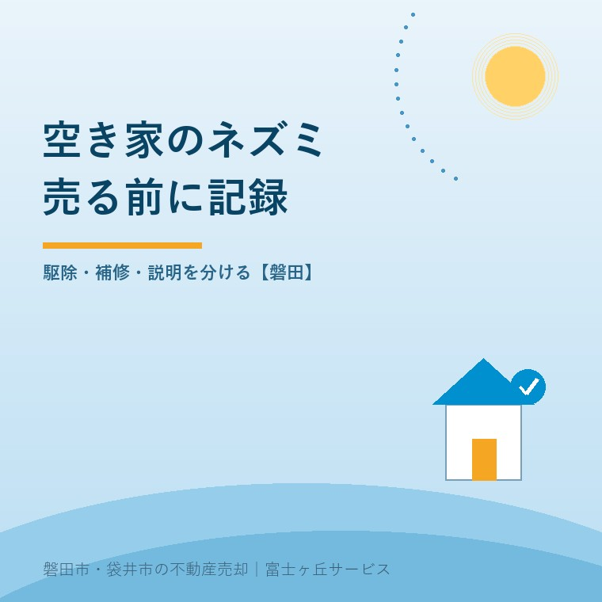
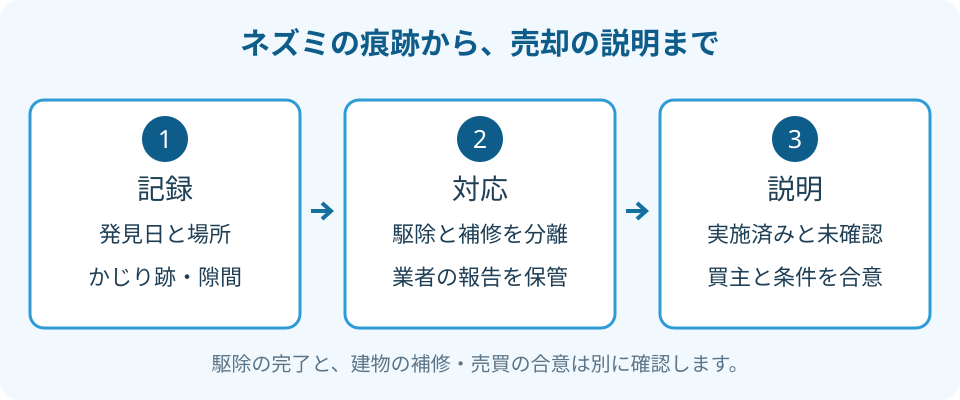

空き家のネズミ対策｜磐田の売却前チェック
2026年9月25日｜カテゴリ：空き家管理・売却準備

この記事の要点
Q. 空いた実家にネズミの跡が。売る前に全部直すべきですか？
空き家のネズミ対策は、痕跡と侵入口の記録、安全の確認、駆除・補修の見積りの順に進めます。全面改修を先に決めず、実施した作業と未確認箇所を買主へ説明できる形に残します。磐田市・袋井市・森町では、介護施設の運営から不動産事業を始めた富士ヶ丘サービスのような「介護×不動産」専門の会社に相談するという選択肢があります。
大石浩之（磐田市／不動産業）です。宅地建物取引士として、施設入居で空いた実家の売却準備を考えます。台所のかじり跡や、ふんらしい物を見つけたとき、「きれいにしてから不動産会社に見せよう」と考えるご家族もいるでしょう。しかし、掃除で消えるのは汚れだけではありません。被害を判断する手がかりまで消してしまうことがあります。
秋の点検は、見えない侵入口を探す準備
静岡市「ねずみ・衛生害虫の対策方法」は、寒い季節にネズミが屋内へ入り込みやすいと説明しています。2026年2月15日更新の資料を、2026年9月25日に確認しました。磐田市の発生件数や増加を示す資料ではありません。
同資料は、食品や家具だけでなく電気コードの食害も挙げています。家の隙間をふさぐ対象には、壁・床・天井や通気口、排水口の周辺も含まれます。玄関が閉まっていることと、ネズミの侵入口がないことは別なのです。
私は、秋の点検を「冬の前に全部駆除する日」とは決めません。家族が安全に見られる範囲で、気になる場所を拾う日と考えます。天井裏や床下へ無理に入らず、破損した電気コードには触れない。傷みがあれば、使用再開の前に電気工事の専門業者へ確認を依頼します。
市の案内の良い点は、餌・侵入口・捕獲という別の作業を示していることです。私は、この分け方なら家族も相談の入口を作れると考えます。一方、空き家では薬剤を置いた後に誰が見に行くのかが抜けやすい。通う担当者がいない家に、作業だけを持ち込んでも続きません。
売るか決まらなくても、痕跡の記録は止めない
空き家のネズミ対策で最初に残したいのは、発見日、場所、写真の組合せです。ネズミか別の動物か、新しい跡か古い跡かは、見ただけで断定しません。「台所の棚の下に、ふんらしい物がある」という観察と、業者の判断を分けて書きます。
私はこう考えます。売るか決まらなくても、痕跡の記録は止めない。親が帰る可能性を残したい家族に、売却の結論まで急がせる必要はありません。ただ、写真を残さず片付けてしまえば、後で駆除業者に見せる材料が減ります。今日の成果は、売出価格を決めることより、家の状態を一つ確かにすることです。
| 記録するもの | 書き方の例 | 避けたい断定 |
|---|---|---|
| 発見日時と位置 | 9月25日、台所の流し台の下 | 家全体が被害を受けている |
| 見えた跡 | 棚の端にかじり跡らしい傷 | ネズミに違いない |
| 気になる隙間 | 配管の周囲に隙間を確認 | ここだけふさげば終わる |
| 確認できない範囲 | 床下・天井裏は未確認 | 見えない場所は異常なし |
写真は部屋全体と気になる箇所を対にすると、場所を伝えやすくなります。撮影のために家具を無理に動かす必要はありません。ふんや死骸らしい物に触れず、清掃の方法も専門業者に相談します。家族の健康を犠牲にしてまで、売却用の見栄えを整える順番ではありません。
天井の音や屋根付近の跡だけでは、動物の種類を決められません。豊岡地区などの空き家で別の動物の可能性も考えるときは、空き家の獣害と管理の確認も合わせて読み、今回確認したことと推測を分けてください。

駆除と補修は、見積りの項目を分ける
空き家のネズミ対策の見積りは、調査、駆除、清掃、侵入口の補修、経過確認を分けて依頼します。総額だけでは、どこまで終わる契約なのか分かりません。建物や配線の修理が、駆除費用に含まれるとも限りません。
私は、調査前に全面改修を約束することには迷いがあります。傷んだ箇所を放置したくない気持ちと、売却条件が未定の家に費用を重ねる不安の両方があるからです。安全に関わる確認を先にし、残りは見積りを見てから、所有者と仲介会社で判断する順番を勧めます。
業者には、隙間をどう確認するか、塞ぐ工事で換気や排水を妨げないかも聞きます。見える穴を家族が一律に埋める作業とは分けてください。捕獲や薬剤を使う場合も、回収、処理、作業後の確認が誰の仕事かを明記してもらいます。
再訪問の有無や、再発時に依頼できる範囲も見積書で照合します。「保証あり」という言葉だけで、建物全体の補修費まで出るとは受け取らない。対象の場所、期間、追加費用の条件を確かめます。この記事では一律の駆除相場を置きません。調査範囲と作業内容が違う金額は、並べても比較にならないからです。
例えば、調査と捕獲だけの見積りと、外壁の補修まで含む見積りでは、安い方を選んでも仕事が同じにはなりません。家族が依頼する前に、項目ごとに「含む・含まない・現地確認後」の印を付けます。空欄をゼロ円と解釈せず、追加発注の前には所有者の了承を取るよう決めておきます。
買主には、発見から対応後までを伝える
ネズミの痕跡があった家の売却準備では、発見時の記録、業者の報告、補修した箇所、未確認箇所を一組にします。「駆除済み」という一語より、何をいつ行ったかを説明できる資料の方が、買主との条件整理に役立ちます。
私は、見えなくなったから説明しなくてよい、という扱いにはしません。清掃をした事実と、侵入が止まったという判断は別です。対応後に新しい痕跡を見たなら、その日と場所も追記します。業者の報告に書かれていない完了判断を、売主や仲介会社が足さないことです。
買主に示す資料には、写真の撮影日を付けます。以前の写真だけで現在の状態を説明しないためです。引渡しまでに点検する人と、変化があったときの連絡先も決めます。補修を売主が行うのか、買主が引渡し後に行うのかは、価格と切り離さず相談します。
売買契約の内容に合わない状態が問題になる「契約不適合責任」は、中古住宅の不具合と売主の責任で整理しています。駆除しただけで責任がなくなるとも、痕跡があれば必ず売主負担になるとも断定できません。告知内容、補修の約束、責任の範囲は、仲介会社を通じて専門家に確認を。
磐田の実家は、次に見に行く人まで決める
磐田市の実家を遠方から見守る家族は、現地での駆除と、その後の巡回を続けられるかを一緒に考えます。磐田・袋井の業者へ相談する際も、鍵の受渡しと立会いの担当者を決めてから日程を合わせると、依頼の範囲がはっきりします。
管理会社に巡回を頼んでいても、駆除や床下調査まで契約に含まれているとは限りません。空き家管理サービスの確認5項目を参考に、見つけた異常を誰へ報告し、別の業者へつなぐのかを確認してください。
- 安全な場所から、気になる跡を日付付きで記録する。
- 駆除と補修を分けた見積りを依頼する。
- 次の点検担当者と、家族の連絡窓口を決める。
施設に入居した親の家でも、家族だけで工事や売却を決めてよいとは限りません。所有者の意向を確かめ、判断や依頼の権限に不明点があれば専門家に確認を。私は、写真と連絡先を揃えるところから案内します。売る結論は、その材料を見てからで構いません。
富士ヶ丘サービスは、磐田・袋井を中心に介護と不動産を一体で相談し、家族が困らない売却を支えます。駆除工事そのものの判断は専門業者に任せ、売主側で残す資料と引渡し条件を整理します。
よくある質問
空き家のネズミ対策は、被害の確認と売却条件の整理を分けると判断しやすくなります。
- ネズミの痕跡がある空き家は、売れませんか？
- 痕跡があるだけで売却できないとは決められません。発見場所、被害の範囲、駆除や補修の経過を整理し、仲介会社と買主への説明方法を相談します。価格や引渡し条件は個別の交渉です。分からない箇所を被害なしと扱わず、確認できた範囲を伝えてください。契約上の責任は専門家に確認を。
- 殺鼠剤を置いたら、売却前の対策は終わりですか？
- 薬剤を置いた事実だけでは、駆除の完了や建物の損傷がないことは確認できません。薬剤の扱いは表示に従い、無人の家で回収や経過確認を誰が行うか決めます。侵入口の調査と補修の要否も別に確認してください。家族が通えない場合は、作業後の点検と報告まで含めて専門業者に相談します。
- 片付ける前に家族で何を記録すればよいですか？
- 安全な場所から、発見日、部屋や位置、かじり跡などの写真を残します。ふんらしい物は触れず、種類や新旧を自己判断しないでください。電気コードの傷みや床の不安があれば作業を止め、専門業者へ伝えます。清掃前の記録と作業後の報告を同じ場所に保管すると、次の点検や売却相談で説明できます。

この記事を書いた人：大石浩之（磐田市／不動産業・宅地建物取引士）
富士ヶ丘サービス株式会社。介護施設の運営から不動産事業を始め、磐田市・袋井市・森町で、介護と相続、実家の売却を一体で相談できる窓口を設けています。家族が困らない売却のため、資料と現地の条件を一件ずつ整理します。著者プロフィール
本記事は2026年9月25日時点の公開情報と筆者の意見です。制度・数値・手続は変更されることがあります。個別の取扱いは担当窓口へ、税務・登記・相続の個別判断は税理士・司法書士・弁護士などの専門家に確認を。